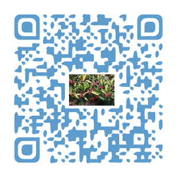
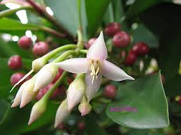
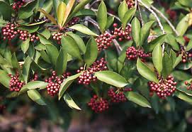
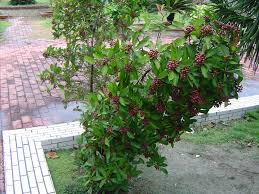

埔墘國小生態園導覽系統
春不老---永恆的青春
科別:紫金牛科

春不老，由於它的葉子四季濃密，結實多量，所以被視為吉祥之樹，象徵長春不老、青春永駐、多子多孫多福氣，很受歡迎。
春不老是台灣原生樹種，常綠小喬木，因為幾乎終年翠綠，油油亮亮有朝氣，故名「春不老」。又因為它的嫩葉鮮紅，像美味的肉排，所以又有了這個有趣的別名「山豬肉」，再加上它的果實累累又有「萬兩金」的美稱。春不老有著很強的轉換空氣污染的能力，可以淨化空氣，花和果實是野外求生的食物之一，總之它的葉、花、果都很美，是很具觀賞價值的優良樹種。
春不老，可以讓人看到從開花到果實成熟的整個過程，加上它不需要太強的光線就可以生長，而且又耐修剪，所以常常被人們應用在園藝景觀中。除了讓人看了賞心悅目之外，也得到鳥兒們的喜愛，所以在果實成熟時，常常可以看見鳥兒拜訪的畫面。
充電區
●學名:Ardisia elliptica Thunb.
●科名:Myrsinaceae 紫金牛科
●園藝觀賞、綠籬：耐風、耐陰、抗瘠，故可為綠籬、修剪造型、庭園美化、大型盆栽等。被廣種為綠籬和園藝作物。
●果實：鳥類喜歡駐足飽食的果實樹。
圖片
  
參考資料:
中央研究院數位典藏資源網(http://digiarch.sinica.edu.tw/)
意見回饋
建議使用Google Chrome瀏覽